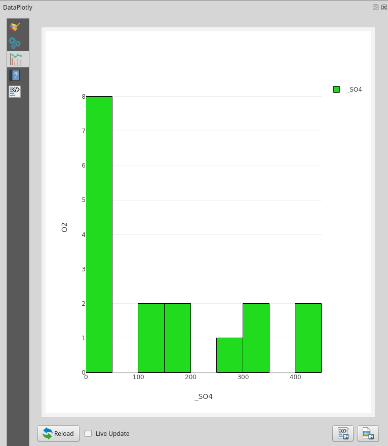
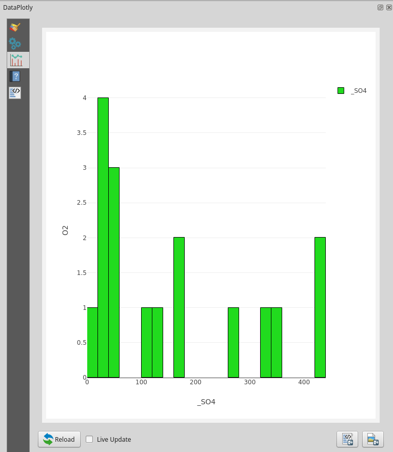

Histogram
Hier kun je de handleiding voor iedere parameter van het histogram vinden. Indien je meer generieke informatie zoekt, zie DataPlotly Standaard gebruik


Diagram eigenschappen
Layer: de keuzelijst toont alle in QGIS ingeladen vector lagen
X: the values in this field will be binned and the count in each bin will
be represented as the length of the bars
Marker Color: the color of the bars. To use different colors for individual
bars, enter an expression that returns an array of color definition strings
with as many elements as there are bars
For example
array('red','green','blue','yellow','purple')
or, to use colors from a color ramp
array_foreach(
generate_series(0, 7),
ramp_color( 'Blues', @element/7)
)
Stroke Color: kleur van de lijn
Stroke Width: de dikte van de rand
Transparency: transparantieniveau van de staaf
Diagram aanpassingen
Show Legend: toon de legenda van het huidige diagram
Horizontal Legend: vink aan voor een horizontale legenda
Plot Title: titel van het diagram
Legend Title: de titel van de legenda
X Label: X label tekst
Invert X Axis: vink aan wanneer je de sortering van de X-as wilt omdraaien
Invert Y Axis: vink aan wanneer je de sortering van de Y-as wilt omdraaien
Bar Orientation: de oriëntatie van de staaf, horizontaal of verticaal
Bar Mode: kies of je wilt groeperen, stapelen of de data over elkaar wilt leggen
Normalization: verschillende mogelijkheden voor het berekenen van klassen zijn beschikbaar
Cumulatief Histogram: vink aan wanneer je een cumulatief histogram wilt maken
Keer Histogram Richting om: vink aan als je de richting van het histogram wilt omdraaien (alleen beschikbaar wanneer de cumulatieve optie is gekozen)
Choose manually the bins: vink aan wanneer je handmatig de klassen wilt kiezen en vul een numerieke waarde in.


Staaf ruimte: kies de afstand tussen de staven, van 0 (geen ruimte) tot 1 (maximale ruimte)